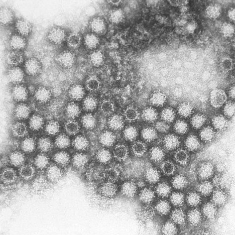

Feline calicivirus
Models 
Virus Information
- RNA/DNA:
- Capsid Symmetry:
- Un/Enveloped:
- Genome Architecture:
- Order:
- Family:
- Genus:
- Species:
- Virion Polymerase:
- Size/Dimensions:
- Genome Size:
- Host/Vector:
- Discovery Time:
- Discovery Location:
- Fun Facts:
| .makerbot |  |
| .stl | |
Summary taken from Wikipedia: Feline calicivirus
Feline calicivirus (FCV) is a virus of the family Caliciviridae that causes disease in cats. It is one of the two important viral causes of respiratory infection in cats, the other being feline herpesvirus. FCV can be isolated from about 50% of cats with upper respiratory infections. Cheetahs are the other species of the family Felidae known to become infected naturally.
- Symptoms:
- Tissue Affected:
- Mortality:
- Treatment:
Citations:
- Picture from - https://en.wikipedia.org/wiki/Feline_calicivirus